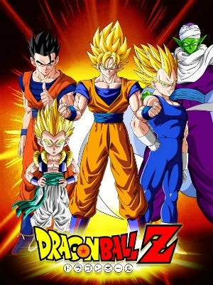

- Imagem
- imagem

Olá, Mundo...
Usando a tag img assim podemos colocar imagens.
Tem varíos jeitos de colocar marcações e pular linha
basta usar a tag br e a tag strong para marcar e deixar
a linha escura.
Também tem a tag mark, que deixa uma marcação de cor amarela
mas tem como mudar a cor também.
Tem a tag ins também que e um tipo que muda a letra.
Tem também a tag sup, para elevar um número 10x203.
é para colocar em baixo usamos a tag sub como o HO2.
Para citações de um site ou referente a um autor
usamos a tag q e blockquote.
Ex:
O livro personalizado traz a possibilidade de abordar temas do dia a dia das crianças como: Identidade, diversidade, criatividade econvívio social.